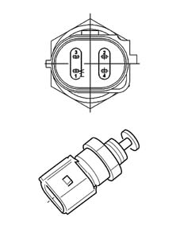

1058OF METHANE TEMPERATURE AND PRESSURE SENSOR CHECK
- Path
- Test > 10 ENGINE UNIT > 1058 GAS CIRCUIT > 1058OF METHANE TEMPERATURE AND PRESSURE SENSOR CHECK
- Kind
- test / check procedure
- Applies to
- engines: 1.6 16v; all production periods; only with equipment: BIPOWER
- Interactive page
- https://sloeber94.github.io/elrnDB-fMltpl/en/#/186003468
Applies to: engines: 1.6 16v; all production periods; only with equipment: BIPOWER
PRESSURE SENSOR CHECK
- The electrical check is carried out by placing a bridge between the sensor and the connector and measuring the output signal using a voltmeter.
- With the diagnostic equipment in the "Voltmeter" function, check, with the ignition ON, that the supply voltage between pin 4 of the pressure sensor and earth is around 5 V.
- Check that the voltage between pin 2 and earth is 3.5V at a pressure of about 10 bar.
- Check that the voltage between pin 2 and earth is 0.5V at a pressure below 1 bar.
TEMPERATURE SENSOR CHECK
- Disconnect the methane temperature/pressure sensor connector.
- Connect to the diagnostic equipment in the Ohmmeter function.
- Connect the diagnostic equipment probes between pins 1 and 3 of the sensor and measure the resistance proportional to the temperature of the gas as set out in the enclosed table.
NOMINAL RESISTANCE (Ohm) | TEMPERATURE (°C) |
|---|---|
167835 | -40 |
48487 | -20 |
16325 | 0 |
6246 | 20 |
2662 | 40 |
1243 | 60 |
628 | 80 |
339 | 100 |
194 | 120 |
117 | 140 |
